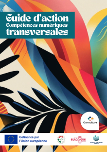
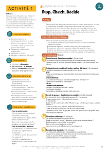
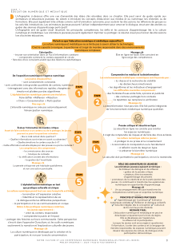
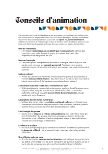
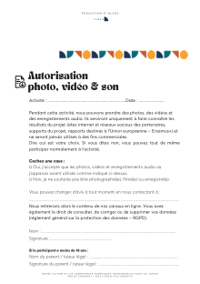
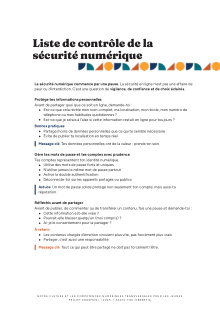
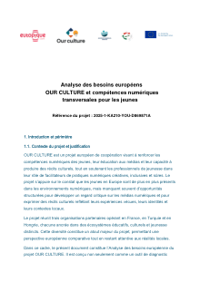

Ce guide a été conçu pour accompagner les animateurs, les éducateurs et les organisations jeunesse afin qu’ils aident les jeunes à s’orienter, à comprendre et à façonner les environnements numériques de manière constructive.
Les jeunes d’aujourd’hui grandissent dans un monde où les espaces numériques font partie intégrante de leur quotidien. Ils y construisent leurs identités, expriment leurs cultures et tissent des liens sociaux. Parallèlement, ces espaces engendrent de nouveaux défis : désinformation, exclusion, dilemmes éthiques et pression constante pour produire et partager du contenu. Dans ce contexte, l’animation jeunesse a un rôle essentiel à jouer.
Plutôt que de se concentrer uniquement sur les compétences techniques, ce guide aborde la culture numérique, l’exploration culturelle, le récit et la participation numérique responsable. L’objectif n’est pas seulement d’aider les jeunes à utiliser les outils numériques, mais de les accompagner pour qu’ils deviennent des acteurs actifs, critiques et créatifs de la vie numérique et culturelle.
Comprendre le fonctionnement des environnements numériques, développer l’esprit critique et adopter des pratiques sûres.
Lire le chapitre →Explorer la culture au-delà des stéréotypes, observer, interviewer et collecter des documents culturels significatifs.
Lire le chapitre →Transformer les documents recueillis en récits clairs et captivants.
Lire le chapitre →Produire et diffuser des histoires à l’aide de formats numériques accessibles.
Lire le chapitre →S’engager de manière responsable en ligne, en favorisant l’inclusion, l’éthique et la participation active.
Lire le chapitre →Ce guide est conçu pour être directement utilisable dans le cadre du travail auprès des jeunes, sans nécessairement posséder de compétences techniques ou d’équipements avancés. Les activités peuvent être adaptées au niveau de langue des participants, à leur aisance avec le numérique, à leur accès au matériel et à leurs besoins d’accompagnement.
Ce guide est destiné aux :
Cela concerne particulièrement les personnes travaillant avec des jeunes âgés de 15 à 30 ans, notamment ceux qui ont le moins l’opportunité de développer des compétences digitales.
Ce guide est conçu comme un outil flexible et modulaire. Nous vous recommandons de commencer par lire les conseils d’animation. Il peut être utilisé :
Les animateurs jeunesse peuvent :
Cette approche repose sur l’apprentissage par la pratique, la réflexion et le partage.
Des pratiques numériques significatives et responsables. Un principe fondamental de ce guide est que les outils numériques doivent avoir du sens et être utilisés avec intention et responsabilité. Cela signifie :
Dans cette perspective, les pratiques numériques ne se limitent pas aux compétences techniques, mais englobent également les pratiques éthiques, culturelles et sociales.
Tout ce qu’il faut pour animer les ateliers, prêt à imprimer.
Le guide, toutes les fiches d’activité, les infographies et toutes les ressources ci-dessus, en un seul téléchargement.

Guide d’action des compétences numériques transversales : tous les chapitres, activités et études de cas.

Les 23 fiches d’activité prêtes à l’emploi des cinq chapitres, en un seul PDF ou en fichiers séparés.


Les conseils pratiques des animateurs qui ont testé les ateliers.

À imprimer et à faire signer avant d’enregistrer les participants.

La liste de contrôle complète pour les jeunes, avec conseils et exercices.

Le rapport global de recherche du projet (enquête et groupes de discussion).
Trois jeux de cartes d’entretien (un objet, une tradition, un monument), inspirés de la méthode des itinéraires de l’anthropologue Dominique Desjeux.